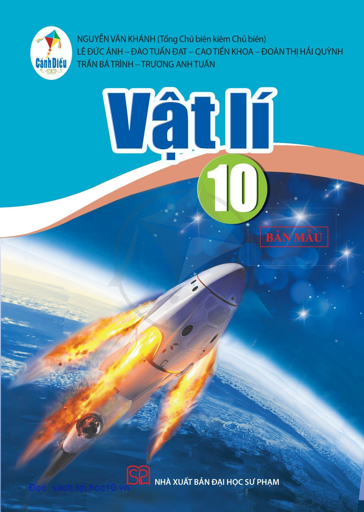
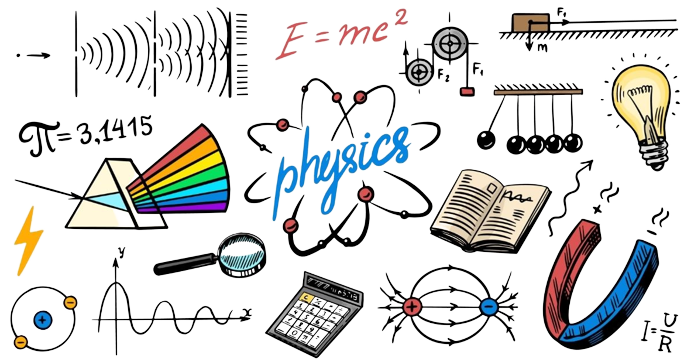
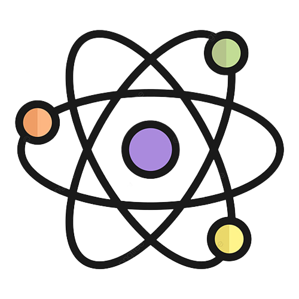

Vật lý
Sách giáo khoa Vật lí 10 gồm phân Mở đầu và 6 chủ đề học tập được chia thành 9 chương mang đến cho các em những trí thức liên quan đến những đặc trưng của chuyển động. nguyên nhân tạo ra sự thay đổi trạng thái chuyển động, các dạng năng lượng cơ học, động lượng và định luật bảo toàn động lượng, các đặc điểm của chuyển động tròn, sự biến dạng của vật rắn.Lựa chọn học Lịch sử 10, trước hết học sinh sẽ được tìm hiểu một số chủ để mang tính nhập môn Lịch sử nói chung, cũng như một số chủ đề về lịch sử chính trị, kinh tế, xã hội, văn hoá, văn minh của nhân loại và của dân tộc. Bên cạnh đó, học sinh cũng sẽ được tiếp cận với những chủ để mang tính định hướng nghề nghiệp, giúp mở rộng, nâng cao kiến thức và rèn luyện năng lực lịch sử, đáp ứng yêu cầu phân hoá sâu ở cấp Trung học phổ thông. Việc tìm hiểu những nội dung này còn giúp học sinh hiểu sâu hơn vai trò của Sử học trong đời sống thực tế, biết được những ngành nghề có liên quan đến lịch sử để có cơ sở định hưởng nghề nghiệp trong tương lai, cũng như có đủ năng lực để giải quyết những tinh huống trong thực tiễn cuộc sống.Lựa chọn học Lịch sử 10, trước hết học sinh sẽ được tìm hiểu một số chủ để mang tính nhập môn Lịch sử nói chung, cũng như một số chủ đề về lịch sử chính trị, kinh tế, xã hội, văn hoá, văn minh của nhân loại và của dân tộc. Bên cạnh đó, học sinh cũng sẽ được tiếp cận với những chủ để mang tính định hướng nghề nghiệp, giúp mở rộng, nâng cao kiến thức và rèn luyện năng lực lịch sử, đáp ứng yêu cầu phân hoá sâu ở cấp Trung học phổ thông. Việc tìm hiểu những nội dung này còn giúp học sinh hiểu sâu hơn vai trò của Sử học trong đời sống thực tế, biết được những ngành nghề có liên quan đến lịch sử để có cơ sở định hưởng nghề nghiệp trong tương lai, cũng như có đủ năng lực để giải quyết những tinh huống trong thực tiễn cuộc sống.


